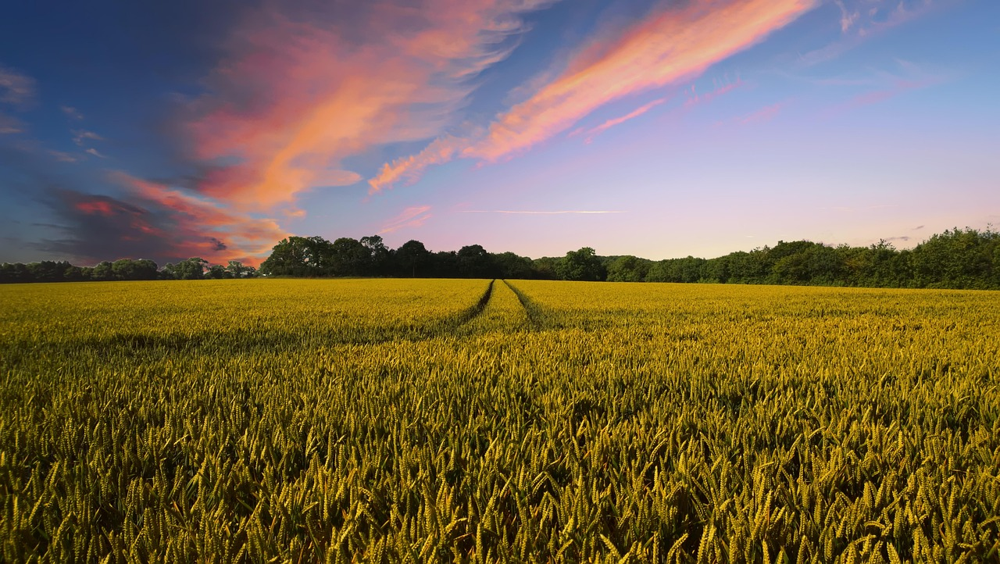
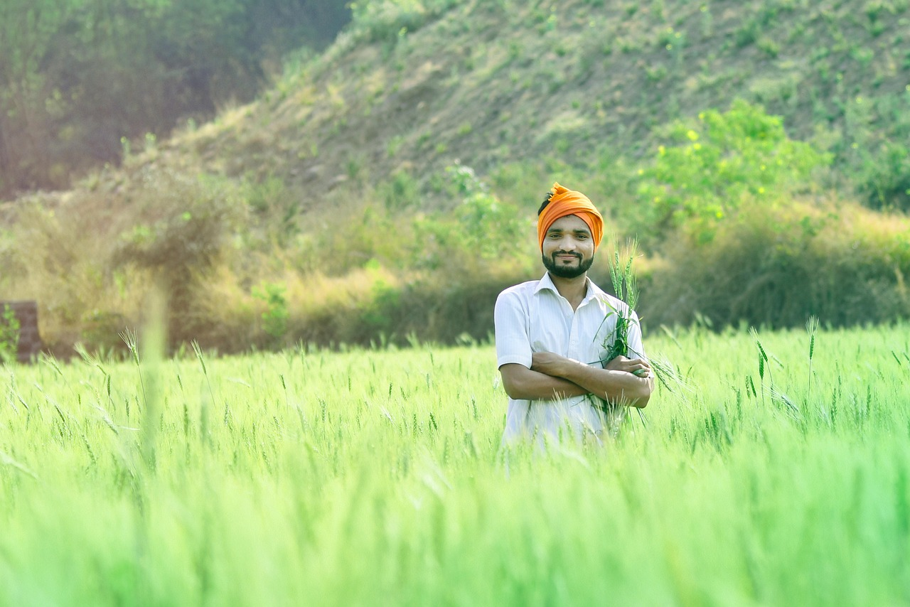
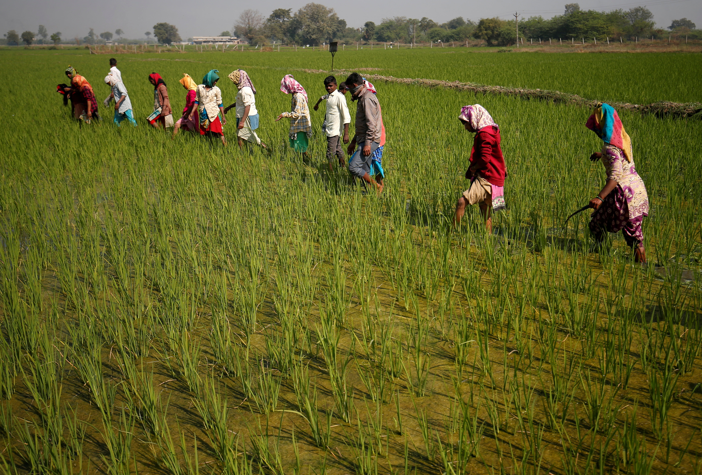

Integrity
Clear, honest and useful information for better decisions.

Agri-Seva brings useful agricultural knowledge, practical guidance and modern ideas closer to the farming community.
Agri-Seva Smart Krushi Kendra is dedicated to making agricultural information easier to explore. From crops and seeds to fertilizers and farming practices, our goal is to support informed decisions at every stage.
We believe practical knowledge, sustainable thinking and access to the right information can help farming communities grow with confidence.




Simple principles that shape how we support the agricultural community.
Clear, honest and useful information for better decisions.
Encouraging modern ideas and practical agricultural learning.
Supporting responsible practices for a healthier future.
Standing with farmers through knowledge and guidance.
We aim to help build a well-informed farming community that can confidently explore better practices, adapt to changing needs and grow sustainably.